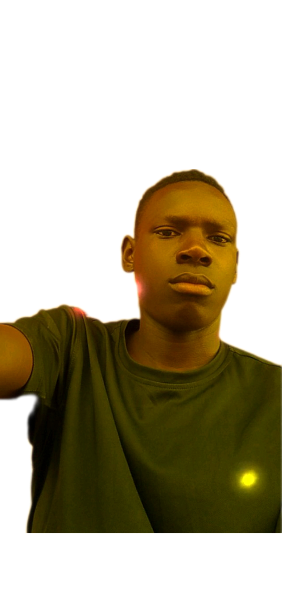

|

CONTACTMuni UniversityArua-Muni site road P.O Box 122, Arua city Whatsapp: 0755951824 Phone: 0777761928 E-mail: mwesjose@gmail.com Website: https://mwesigwaj.github.io/wad/ COMMUNICATIONI have managed to get different certificates because of my good communication skills. I served as a speaker of ICT club at Hilltop High School for two years. LEARDERSHIPI have two certificates of my leardership as Headboy and Academic prefect at Happy Hours P/S and Hilltop High School respectively. I was also a school organist for two years at St Andrea Kahwaa's College in Hoima. I also got a certificate for this. |
MWESIGWAJOSEPHREGISTERED STUDENTEDUCATIONHappy Hours P/S.Hilltop High School Hoima. St Andrea Kahwaa's College Hoima. Muni University: Bachelor of Information Technology. EXPERIENCEDecember 2023- March 2024:Worker with UNRA. May 2024: Enumerator during census, working with UBOS. I have a good experience regarding graphics designs and also delivering quality care on people. REFERENCESTuhaise Irene0785216601. Isingoma Josephat 0778876222. Byanganga Emmanuel 0781248150. Oyo Bridges 0766071027. |